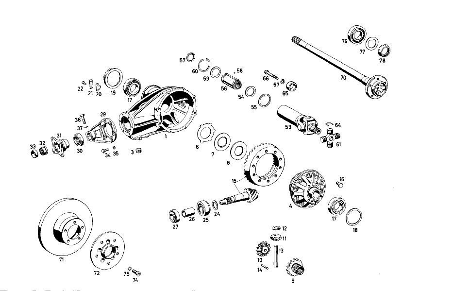

| № | Артикул | Название | Кол. | Примечание | Ограничение |
|---|---|---|---|---|---|
| 1 | A 112 350 01 20 | REAR AXLE HOUSING | 1 | ||
| 3 | A 186 997 00 32 | - ЗАГЛУШКА РЕЗЬБОВАЯ | 2 | M24X1,5 | |
| 4 | A 112 350 13 23 | DIFFERENTIAL GEAR | 1 | ||
| 6 | A 112 353 13 60 | - FRICTION DISC. | 10 | 1.1\-MM THICK, без SINTER LINING | |
| 7 | A 112 353 12 60 | - FRICTION DISC, | 8 | 1.8\-MM THICK, с SINTER LINING ON BOTH SIDES | |
| 8 | A 112 353 11 60 | - FRICTION DISC, | 2 | 3.0\-MM THICK OPTIONAL с SINTER LINING ON ONE SIDE | |
| 9 | A 112 353 04 15 | - REAR AXLE | 1 | SIDE GEAR, LEFT, 16 TEETH | |
| 10 | A 112 350 02 40 | - REAR AXLE SHAFT GEAR | 1 | SIDE GEAR, RIGHT, 16 TEETH | |
| 11 | A 112 353 02 14 | - ВЕДУЩ.КОН.ШЕСТЕРНЯ | 2 | 10 TEETH | |
| 12 | A 112 353 00 24 | - Сферическая шайба | 2 | ||
| 13 | A 112 353 00 21 | - DIFFERENTIAL PINION SHAFT | 1 | ||
| 14 | A 136 353 02 74 | - БОЛТ | 1 | ||
| 15 | A 112 350 02 39 | РЯД ШЕСТЕРЕН | 1 | с RING GEAR, RATIO 1:3,92 | |
| 16 | A 128 990 00 01 | болт | 10 | ||
| 17 | A 000 980 04 02 | Конический подшипник | 2 | ||
| 18 | A 128 353 00 52 | РАСПОРНАЯ ШАЙБА | 1 | 1.8\-MM THICK OPTIONAL | |
| 19 | A 110 353 01 25 | КОЛЬЦО РЕЗЬБОВОЕ | 1 | ||
| 20 | A 180 353 01 73 | ПРЕДОХРАНИТЕЛЬ | 1 | OPTIONAL | |
| 21 | A 180 994 00 30 | Стопорная шайба | 1 | ||
| 22 | N 000933 006015 | Винт | 2 | ||
| 24 | A 128 353 05 52 | РАСПОРНАЯ ШАЙБА | 1 | 0.80\-MM THICK OPTIONAL | |
| 25 | A 000 980 02 02 | КОНИЧ. РОЛИКОПОДШИПНИК | 1 | OPTIONAL | |
| 26 | A 110 353 02 42 | ДИСТАНЦ. ВТУЛКА | 1 | ||
| 27 | A 000 980 01 02 | КОНИЧ. РОЛИКОПОДШИПНИК | 1 | OPTIONAL | |
| 29 | A 110 353 03 08 | КРЫШКА | 1 | ||
| 30 | A 004 997 25 46 | УПЛОТНИТ. КОЛЬЦО | 1 | ||
| 31 | A 110 350 01 45 | Фланец | 1 | ||
| 32 | A 111 350 01 66 | Шлицевая гайка | 1 | ||
| 33 | A 111 994 02 44 | - предохранитель | 1 | ||
| 34 | N 000933 008040 | Винт | 6 | ||
| 35 | N 000127 008203 | Пружинное кольцо | 6 | ||
| 36 | N 070613 010000 | Винт | 1 | ||
| 37 | N 000127 010200 | Пружинное кольцо | 1 | ||
| 40 | A 112 350 24 19 | SUPPORTING TUBE | 1 | ||
| 42 | A 109 350 01 19 | ТРУБА НЕСУЩАЯ | 1 | ||
| 43 | A 180 351 04 50 | - ВТУЛКА | 2 | ||
| 44 | A 180 350 04 90 | КЛАПАН | 1 | ||
| 53 | A 112 350 01 13 | Триподный ШРУС | 1 | ||
| 54 | A 180 357 01 52 | - Диск | 1 | ||
| 55 | A 000 994 29 41 | - Стопорное кольцо | 1 | ||
| 56 | A 198 350 01 13 | - Скользящая муфта | 1 | UMLENKSCHEIBE | |
| 57 | A 188 994 00 41 | - Стопорное кольцо | 2 | ||
| 58 | A 180 981 00 86 | - Ролик | 108 | ||
| 59 | A 188 357 00 52 | - Диск | 1 | ||
| 60 | A 094 990 71 05 | - Стопорное кольцо | 1 | ||
| 61 | A 112 350 00 28 | - ШАРНИР КАРДАННЫЙ | 1 | с NEEDLE BEARING BUSHINGS AND NEEDLES | |
| 64 | A 186 994 12 35 | - Пруж. стопорное кольцо | 4 | OPTIONAL | |
| 65 | A 112 357 00 50 | BUSHING | 1 | ||
| 66 | N 000912 010035 | CYLINDRICAL HEAD SCREW | 1 | ||
| 67 | N 000127 010200 | Пружинное кольцо | 1 | ||
| 68 | A 110 357 04 91 | Манжета | 1 | ||
| 69 | A 110 357 03 91 | Манжета | 1 | REPAIR SIZE | |
| 70 | A 112 357 04 01 | Полуось заднего моста | 1 | ||
| 71 | A 112 423 02 12 | Тормозной диск | 2 | ||
| 72 | A 112 357 02 08 | WHEEL MOUNTING PLATE | 2 | ||
| 74 | N 000912 012053 | БОЛТ | 10 | ||
| 75 | N 007980 012000 | КОЛЬЦО ПРУЖИННОЕ | 10 | ||
| 76 | A 000 981 05 06 | Роликоподшипник | 2 | ||
| 77 | A 183 353 03 73 | предохранитель | 2 | ||
| 78 | A 153 357 00 26 | Шлицевая гайка | 2 | ||
| 85 | A 110 351 00 74 | Палец | 1 | ||
| 86 | A 180 351 01 53 | Проставочная втулка | 2 | OPTIONAL | |
| 87 | A 180 351 14 52 | Компенсационная шайба | 2 | 2.0\-MM THICK | |
| 88 | A 180 351 13 52 | Центрирующее кольцо | 2 | 1.9\-MM THICK OPTIONAL | |
| 89 | A 180 351 03 51 | Проставочное кольцо | 2 | ||
| 90 | A 180 351 09 86 | Резиновое кольцо | 4 | ||
| 91 | A 180 351 00 74 | Клин | 1 | ||
| 92 | N 000127 008200 | КОЛЬЦО ПРУЖИННОЕ | 1 | ||
| 93 | N 000934 008000 | Гайка | 1 | ||
| 94 | A 180 994 03 41 | Стопорное кольцо | 1 | ||
| 95 | N 000443 020000 | Запорная крышка | 1 | ||
| 96 | A 180 351 11 53 | РАСПОРН. ТРУБКА | 1 | ||
| 97 | A 180 994 01 12 | Стопорная шайба | 1 | ||
| 98 | A 180 997 04 30 | Резьбовая пробка | 1 | ||
| 99 | N 071412 006100 | Пресс-масленка | 1 | IN REAR EYE [402] БОЛЬШЕ НЕ ПОСТАВЛЯЕТСЯ | |
| 100 | N 071412 006200 | Пресс-масленка | 1 | IN FRONT EYE 20.5 MM HIGH | |
| 101 | A 110 350 12 75 | Резиновая опора | 1 | OPTIONAL | |
| 102 | A 110 350 01 32 | КРОНШТЕЙН | 1 | ||
| 103 | N 001473 003001 | - Просечной штифт | 1 | ||
| 104 | N 070613 010000 | Винт | 2 | ||
| 105 | N 000127 010200 | Пружинное кольцо | 2 | ||
| 106 | A 112 350 20 29 | НИЖН. ПРОДОЛЬН. ШТАНГА | 1 | ||
| 108 | A 110 352 17 65 | САЙЛЕНТ-БЛОК | 2 | ||
| 112 | A 111 352 01 73 | Стопорная шайба | 4 | ||
| 114 | A 111 352 01 71 | болт | 4 | OPTIONAL | |
| 115 | A 112 350 04 75 | САЙЛЕНТ-БЛОК | 1 | ||
| 117 | A 112 351 02 45 | ПОДКЛАДКА | 1 | ||
| 119 | N 000961 016004 | Винт | 1 | ||
| 120 | N 000127 016200 | Пружинное кольцо | 1 | ||
| 121 | N 000933 010016 | Винт | 4 | ||
| 122 | N 000127 010200 | Пружинное кольцо | 4 | ||
| 125 | A 110 350 04 93 | Поперечная распорка | 1 | ||
| 126 | N 000934 014006 | Гайка | 1 | ||
| 127 | A 111 351 03 40 | ДЕРЖАТЕЛЬ | 1 | ||
| 128 | A 111 351 04 48 | Резиновая опора | 2 | ||
| 129 | A 111 351 02 40 | Язычок | 1 | ||
| 130 | N 000933 010106 | Винт | 1 | ||
| 131 | N 000137 010201 | Пружинная шайба | 1 | ||
| 132 | N 000960 012163 | БОЛТ | 1 | ||
| 133 | N 000137 012201 | Пружинная шайба | 1 | ||
| 134 | A 111 351 04 44 | Резиновое кольцо | 2 | ||
| 135 | A 110 351 07 43 | Чашка | 1 | ||
| 136 | A 110 351 06 43 | Чашка | 1 | ||
| 137 | N 000934 012009 | Гайка | 1 | ||
| 138 | N 007967 012001 | Гайка | 1 | [402] БОЛЬШЕ НЕ ПОСТАВЛЯЕТСЯ | |
| 139 | A 110 352 10 65 | Резиновая опора | 2 | ||
| 140 | A 110 352 00 42 | Крепежная пластина | 2 | с RETAINER | |
| 142 | A 111 990 03 40 | ШАЙБА | 2 | ||
| 144 | N 000127 008203 | Пружинное кольцо | 6 | ||
| 145 | N 000934 008008 | Гайка | 6 | ||
| 146 | N 000127 014201 | Пружинное кольцо | 2 | [402] БОЛЬШЕ НЕ ПОСТАВЛЯЕТСЯ | |
| 147 | N 000934 014003 | Гайка | 2 | ||
| A 112 350 21 00 | ЗАДНИЙ МОСТ | 1 | с THRUST ARM, RATIO 1:3,92 MID \-CENTERING | ||
| A 112 350 00 03 | Картер заднего моста | 1 | CENTRAL PIECE с LEFT REAR AXLE TUBE, LESS SLIP UNIVERSAL JOINT, RIGHT REAR AXLE TUBE AND REAR AXLE SHAFT, RATIO 1:3,9 | ||
| A 112 353 10 60 | - FRICTION DISC, | 2 | 3.1\-MM THICK OPTIONAL с SINTER LINING ON ONE SIDE | ||
| A 112 353 09 60 | - FRICTION DISC, | 2 | 3.2\-MM THICK OPTIONAL с SINTER LINING ON ONE SIDE | ||
| A 112 353 08 60 | - FRICTION DISC, | 2 | 3.3\-MM THICK OPTIONAL с SINTER LINING ON ONE SIDE | ||
| A 112 353 14 60 | - FRICTION DISC, | 2 | 3.5\-MM THICK OPTIONAL с SINTER LINING ON ONE SIDE | ||
| A 112 353 15 60 | - FRICTION DISC, | 2 | 3.6\-MM THICK OPTIONAL с SINTER LINING ON ONE SIDE | ||
| A 128 353 22 52 | РАСПОРНАЯ ШАЙБА | 1 | 1.7\-MM THICK OPTIONAL | ||
| A 128 353 01 52 | РАСПОРНАЯ ШАЙБА | 1 | 1.9\-MM THICK OPTIONAL | ||
| A 128 353 02 52 | РАСПОРНАЯ ШАЙБА | 1 | 2.0\-MM THICK OPTIONAL | ||
| A 128 353 03 52 | РАСПОРНАЯ ШАЙБА | 1 | 2.1\-MM THICK OPTIONAL | ||
| A 128 353 04 52 | РАСПОРНАЯ ШАЙБА | 1 | 2.2\-MM THICK OPTIONAL | ||
| A 180 353 02 73 | ПРЕДОХРАНИТЕЛЬ | 1 | OPTIONAL | ||
| A 180 353 03 73 | ПРЕДОХРАНИТЕЛЬ | 1 | OPTIONAL | ||
| A 180 353 05 73 | предохранитель | 1 | OPTIONAL | ||
| A 180 353 06 73 | ПРЕДОХРАНИТЕЛЬ | 1 | OPTIONAL | ||
| A 128 353 07 52 | РАСПОРНАЯ ШАЙБА | 1 | 0.90\-MM THICK OPTIONAL | ||
| A 128 353 09 52 | РАСПОРНАЯ ШАЙБА | 1 | 1.00\-MM THICK OPTIONAL | ||
| A 128 353 11 52 | РАСПОРНАЯ ШАЙБА | 1 | 1.10\-MM THICK OPTIONAL | ||
| A 128 353 13 52 | РАСПОРНАЯ ШАЙБА | 1 | 1.20\-MM THICK OPTIONAL | ||
| A 128 353 15 52 | РАСПОРНАЯ ШАЙБА | 1 | 1.30\-MM THICK OPTIONAL | ||
| A 128 353 17 52 | РАСПОРНАЯ ШАЙБА | 1 | 1.40\-MM THICK OPTIONAL | ||
| A 128 353 19 52 | РАСПОРНАЯ ШАЙБА | 1 | 1.50\-MM THICK OPTIONAL | ||
| A 000 980 00 02 | КОНИЧ. РОЛИКОПОДШИПНИК | 1 | OPTIONAL | ||
| A 000 980 10 02 | Конический подшипник | 1 | OPTIONAL | ||
| A 000 980 03 02 | КОНИЧ. РОЛИКОПОДШИПНИК | 1 | OPTIONAL | ||
| A 000 980 11 02 | КОНИЧ. РОЛИКОПОДШИПНИК | 1 | OPTIONAL | ||
| A 110 353 02 08 | КРЫШКА | 1 | |||
| N 070613 010000 | Винт | 1 | |||
| N 000127 010200 | Пружинное кольцо | 1 | |||
| A 186 994 04 35 | - СТОПОРН. КОЛЬЦО | 4 | OPTIONAL | ||
| A 186 994 15 35 | - СТОПОРН. КОЛЬЦО | 4 | OPTIONAL | ||
| A 186 994 17 35 | - СТОПОРН. КОЛЬЦО | 4 | OPTIONAL | ||
| A 186 994 19 35 | - СТОПОРН. КОЛЬЦО | 4 | OPTIONAL | ||
| A 002 988 10 78 | Скоба | 9 | REPAIR SIZE | ||
| A 112 357 05 01 | Полуось заднего моста | 1 | |||
| A 112 401 01 71 | - ШПИЛЬКА КРЕПЛЕНИЯ КОЛЕСА | 10 | |||
| N 000933 010026 | Винт | 4 | LEFT REAR AXLE TUBE TO REAR AXLE HOUSING | ||
| N 000933 008048 | Винт | 4 | LEFT REAR AXLE TUBE TO REAR AXLE HOUSING | ||
| N 900262 009000 | СОЕДИНИТЕЛЬНЫЙ ЭЛЕМЕНТ | 2 | |||
| A 180 351 06 74 | БОЛТ | 1 | |||
| A 180 351 18 53 | Проставочная втулка | 2 | OPTIONAL | ||
| A 180 351 17 53 | Проставочная втулка | 2 | OPTIONAL | ||
| A 180 351 16 53 | Проставочная втулка | 2 | OPTIONAL | ||
| A 180 351 15 53 | РАСПОРН. ТРУБКА | 2 | OPTIONAL | ||
| A 180 351 14 53 | Проставочная втулка | 2 | OPTIONAL | ||
| A 180 351 14 52 | Компенсационная шайба | 2 | 2.0\-MM THICK OPTIONAL | ||
| A 180 351 15 52 | Дистанционная шайба | 2 | 2.1\-MM THICK OPTIONAL | ||
| A 180 351 16 52 | Компенсационная шайба | 2 | 2.2\-MM THICK OPTIONAL | ||
| A 180 351 17 52 | Компенсационная шайба | 2 | 2.3\-MM THICK OPTIONAL | ||
| A 180 351 18 52 | Компенсационная шайба | 2 | 2.4\-MM THICK OPTIONAL | ||
| A 180 351 19 52 | Компенсационная шайба | 2 | 2.5\-MM THICK OPTIONAL | ||
| A 180 351 27 52 | Компенсационная шайба | 2 | 2,6\-MM THICK OPTIONAL | ||
| A 180 351 28 52 | Компенсационная шайба | 2 | 2,7\-MM THICK OPTIONAL | ||
| A 180 351 29 52 | Центрирующее кольцо | 2 | 2.8\-MM THICK OPTIONAL | ||
| A 180 351 30 52 | Компенсационная шайба | 2 | 2.9\-MM THICK OPTIONAL | ||
| A 180 351 20 52 | Компенсационная шайба | 2 | 3.0\-MM THICK OPTIONAL | ||
| A 180 351 31 52 | Компенсационная шайба | 2 | 3.1\-MM THICK OPTIONAL | ||
| A 180 351 32 52 | Центрирующее кольцо | 2 | 3.2\-MM THICK OPTIONAL | ||
| A 111 350 02 75 | САЙЛЕНТ-БЛОК | 1 | OPTIONAL | ||
| A 180 350 09 75 | САЙЛЕНТ-БЛОК | 1 | OPTIONAL | ||
| A 110 350 13 75 | САЙЛЕНТ-БЛОК | 1 | OPTIONAL | ||
| A 112 350 21 29 | НИЖН. ПРОДОЛЬН. ШТАНГА | 1 | |||
| A 111 352 03 71 | БОЛТ | 4 | OPTIONAL | ||
| A 112 351 01 45 | ПОДКЛАДКА | 1 | |||
| N 000933 008108 | Винт | 4 | |||
| N 000125 008407 | ШАЙБА | 8 |
Позиций: 179 · подписано на схемах: 112 · колесо — плавный зум в курсор, перетаскивание — пан, двойной клик — зум, клик по артикулу — скопировать · наведите на строку или цифру на схеме — подсветка связки, клик — закрепить.